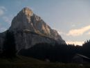
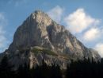
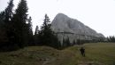

Víkend zvesených batohov
2014 · Rakúsko
Obersteiermark – Mixnitz, Kalbling
Gesäuse
Víkend zvesených batohov
Bolo raz jedno chladné októbrové ráno a my, rozumej predsedníctvo, sme sa vybrali na víkendový výlet do Rakúska, mali sme tam nejaké nedoriešené lezecké resty. V lezeckej hantýrke, že nehali sme tam zavesené batohy, no a zazdalo sa nám dosť vhodné naštartovať auto a ísť si ich zvesiť, aby nás tieto myšlienky zbytočne po nociach nemátali a my sme mohli po nociach snívať už o nových výzvach. Predsedníctvo znamená sám Predseda Dušanko, podpredseda Horár a podpredseda ja. Čiže samozrejme sme išli s tým, že sa nám nesmie nič stať. V prípade nejakého nášho hromadného nešťastia, by správu klubu prevzal dnes jediný aktívny, klubový, radový člen Candát, čiže by to prešlo za rieku Moravu. No a nie že by som chcel rozdúchávať národnostné vášne, ale nie je istota, že by sa nášmu klubu darilo tak dobre ako na Slovensku. Čiže bez chýb, len zvesiť batohy a rýchlo domov J





Prvý deň sme okamžite prefičali do Mixnitzu do cesty http://www.bergsteigen.com/klettern/steiermark/grazer-bergland/sanduhrenparadies odkiaľ sme museli v lete, dnes už z neznámych dôvodov, ujsť. Vtedy bol s nami, aj už horeuvedený, člen z Čiech. Hneď v prvej dľžke sme batoh našli, no kedže nám to išlo ako po masle, tak sme cestu preliezli celú. Len bolo na môj vkus akosi chladno, po sľúbenom inverznom počasí ani chýru, ani slychu. Po doleze sme našli na borovici prevesené štýlové lezečky – Bajovky – cenný to skalp J. Zišli sme na podvečer dole a reku, že kam pojdeme spať. Však už sme aj hladní, aj smädní a mužstvo potrebuje občerstvenie. Rozhodli sme sa v pomere hlasov 3:0(nikto nebol proti), že opúšťame Mixnitz a mierime ešte večer priamo pod náš druhý cieľ – Kalbling. Pod nádhernú horu v tvare pyramídy s neodolateľnými vápencovými stenami. Presúvame sa teda už s jedným zveseným batohom v kufri. Tu si ten zavesený batoh pamätáme celkom pesne(aj napriek nášmu veku), boli sme tu totiž asi tak pred dvoma rokmi, v lete no a južný hrebeň v tom letnom dni by bol pre nás príliš horúce dobrodružstvo. Na pripomenutie, v BA vtedy zúrilo 41stupňov v tieni, čiže nie na palubnej doske, tam bolo aj viac, možno aj 76st J. Takže Kalbling a jeho južný hrebeň http://www.bergsteigen.com/klettern/steiermark/ennstaler-alpen/kalbling-suedgrat je náš ranný cieľ.


Večer po príchode na Parkplatz sme pri našej dokolnalej súhre mali o chvíľu navarené, postavený malý príbytok, potom nejaké to pivečko. Už len spať. Nejako som sa doma nezamyslel nad tým, že je už október a zobral som si iba letný spacák. Kedže sme ráno na tacháči videli 4stupne, tak je jasné, že som viac či menej drkotal celú noc. Ale šak nejako sa to dalo vydržať. Ráno čajík, kafé, raňaječky a vyrážame na nástup.
Za hoďku sme už aj tam. Keďže sme traja, prepúštame ešte jednu miestnu dvojku za dohodnuté večerné pivo. Samozrejme súhlasia. No a potom je už len rad na nás. Cesta ubieha dobre, prakticky bez nejakých zádrhelov, lezeckých či orientačných, dokonca nájdeme náš zavesený dvojročný batoh. Pod vrcholom už upaľujeme tak, že dokonca ako trojka, predbiehame pocestnú dvojku. To asi preto, že sme sa už neistili J. Len tá sľubovaná inverzia furt nič, vlastne je zamračené, občas málinko slnka. Aj cesta byla suchá, místy mokrá (Buty). Cestou si na štande ešte konečne dobre po nemecky poklábosím s miestnym vodcom. Na vrchole nejaké sladkosti a hybáj dole. Cestou ešte na chate dáme jedno pivo, ale nie moc dobré. Pri aute sme za šera, tam chlapci dávajú ešte jedno vzduchom chladené. Sadá tma a zima sa opäť vtiera pod kožu. Hodíme do kufra druhý zvesený batoh a opúšťame podvečerný kľud pod stenou a odchádzame. Šoférujem, ale tuším ma cestou strieda Duško, alebo nie? Už ani neviem, kto si to má pamätať. Hrá FM4 a k tomu myšlienky, cesta,ticho, teplo, spánok... Rozmýšľam, že toto bol rok zvesených batohov, lebo na jar sme aj v Komárnickom na Zadnom Gerlachu boli čosi zvesiť...


Resty su vyriešené pozeráme dopredu
Ivík môj
Pôvodná stránka: archív horecsport.sk